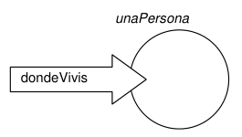
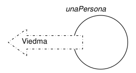

UNIVERSIDAD TECNOLÓGICA NACIONAL
FACULTAD REGIONAL CORDOBA - EXTENSIÓN ÁULICA BARILOCHE
INGENIERÍA EN SISTEMAS DE INFORMACIÓN
AÑO LECTIVO 2025
Paradigmas de la programación
Programación Orientada a Objetos
Profesor: Gustavo Trucco
Ayudante: Ana Pérez Ghiglia
Alumno: Ricardo Freccero
Número de legajo: 415753
Introducción a la materia
Lo que vamos a estudiar en esta materia es literalmente lo que dice su nombre: los paradigmas de la programación. Un paradigma es, en sentido general, un modelo, esquema o conjunto de ideas y reglas que sirven como referencia para entender o actuar en un campo determinado. Es como una “forma de ver las cosas” que se comparten en una comunidad y sirven de guía en la interpretación y resolución de problemas.
En programación, un paradigma es un estilo o enfoque que define cómo pensamos y estructuramos la solución a un problema mediante un lenguaje de programación. Cada paradigma establece un conjunto de conceptos, reglas y técnicas que orientan la forma en que escribimos, organizamos y ejecutamos el código.
En la materia vamos a estudiar tres paradigmas fundamentales:
Paradigma orientado a objetos Organiza el programa en torno a objetos, que combinan datos (atributos) y comportamientos (métodos). Se basa en conceptos como clases, herencia, polimorfismo y encapsulamiento.
Paradigma funcional Considera la computación como la evaluación de funciones matemáticas, evitando estdos mutables y efectos secundarios. Promueve la inmutabilidad, la composición de funciones y un estilo declarativo para expresar la lógica del programa.
Paradigma lógico Basa la programación en la defnición de hechos y reglas que describen relaciones lógicas. El programa se formula como un conjunto de proposiciones, y el motor de inferencia del lenguaje busca respues o pruebas a partir de ellas.
En este resumen vamos a estudiar el paradigma orientado a objetos, que va a ser el contenido del primer parcial de la materia.
Conceptos generales
El paradigma de los objetos
Este paradigma también se conoce como la Programación Orientada a Objetos (OOP por sus siglas en inglés Object Oriented Programming). La idea del OOP es concebir a un sistema como un conjunto de entidades (objetos) que representan al munod real.
Sus principio mas fundamentales son:
- Desarrollar sistemas con modelos cercanos a la realidad.
- Construir componentes de software que sean reutilizables.
- Que las soluciones puedan ser extendidas y modificadas con el mínimo impacto en el resto de la estrucura.
Principales características
- Desarrollo modular basado en objetos, creados a partir de clases, que son tipos abstractos de datos.
- Encapsulamiento: Es el hecho de poder “agrupar” los datos (atributos) y el código que los manipula (métodos) dentro de una misma unidad (clase), restringiendo el acceso directo a esos datos desde fuera de la clase. Encapsulamos los atributos y métodos dentro de cada clase.
- La idea es enviar mensajes a los objetos para que estos resuelvan los problemas que necesitemos. Posibilita la delegación de responsabilidades entre objetos.
- Herencia: Permite que los objetos se definan como una extensión o modificación de otros objetos.
- Polimorfismo: Es la capacidad de que un mismo método pueda comportarse de forma distinta según el objeto que lo utilice.
Objetos y mensajes
Objetos
Los objetos son entidades que representan las “cosas” del mundo real que forma parte del dominio del problema. Los objetos pueden representar cosas físicas, como una persona, una casa, un avión o una tarjeta; pero también pueden representar cosas mas conceptuales, que no tienen lugar en el mundo físico. Algunos ejemplos de estos últimos pueden ser un pedido (como el que hace una persona a un restaurante cuando pide su comida), un movimiento (los movimientos de las cuentas bancarias), etc.
En SmallTalk, que es el lenguaje de programación que vamos a usar para programar siguiendo las bases de OOP, todo es un objeto. Todos los tipos de datos son un objeto, las listas son un objeto, las ventanas del IDE son un objeto, sus botones, los caracteres, todo.
Mensajes
Los objetos interactúan solicitándose servicios e intercambiando información mediante el envío de mensajes.
Para pedirle a un objeto que realice una acción se le envía un mensaje, y el objeto realiza la tarea solicitada.
Cada objeto tiene su propio set de mensajes que es capaz de entender.
Hay algunos mensajes que le piden al objeto que devuelva un valor.
Ejemplo 1 Podemos tener un objeto que sea unaPersona y que entienda el mensaje dondeVivis, devolviendo una cadena que indica el lugar en donde vive.
En el diagrama siguiente los círuclos representan a los objetos, las flechas que apuntan hacia los objetos son mensajes que les llegan, y las flechas que tienen origen en los objetos son la respuesta del mismo.
 
Otros mensajes pueden no indicar al objeto que devuelva un valor, sino que modifique información del sistema. ::: {.callout-tip title=Ejemplo} ::: {#exm-mensaje-que-modifica}
Podemos mandarle al objeto unaPersona un mensaje que sea mudarse: Rosario. De esta manera, el objeto no va a devolver ningún dato, sino que simplemente va a modificar el atributo asignado a almacenar el domicilio actual. Este mensaje en particular es un mensaje que recibe argumentos y nos podemos dar cuenta porque hay un signo de dos puntos “:” luego de la palabra mudarse. El argumento del mensaje es Rosario. ::: :::
Los objetos existen antes y permanecen después del envío del mensaje, y siguen siendo el mismo objeto por mas que se haya modificado alguna de sus características.
Si ahora volviesemos a preguntarle al objeto de los ejemplos dónde vive, nos respondería Rosario.
La funcionalidad de un sistema de objetos se implementa mediante el envío de mensajes a objetos.
Estructura de un objeto
Todos los objetos están compuestos por
- Un estado interno, conformado por atributos que describen cómo es la entidad y contienen los valores que representan su información
- El comportamiento, que consiste en el conjunto de mensajes que puede recibir. Para ello dispone de métodos.
El envío de un mensaje se representa mediante el objeto receptor, seguido del identificador del mensaje, y por último los argumentos, en caso de que sean necesarios.
Atributos
Para que el objeto pueda responder a los mensajes, es necesario que conozca determinada información. Todo aquello que el objeto conoce constituye una característica propea de cada objeto y diferente a la de otros, y se denomina atributos.
En SmallTalk a los atributos se los conoce como variables de instacia. Cada una es identificada con un nombre y contiene un valor. Estas variables son privadas al objeto, solo pueden ser accedidas, utlizadas y modificadas por el mismo objeto.
Métodos
Para que el objeto pueda responder a los mensajes, debe contar con la habilidad necesaria para procesar los datos de los atributos de manera adecuada. Esto se implementa mediante métodos.
Un método es una porción de código donde se detalla lo que el objeto debe hacer para realizar una tarea solicitada. En respuesta a un mensaje el objeto ejecuta un método.
Cada método tienen un nombre que lo identifica y puede recibir argumentos, lo que constituye su interfaz pública. A su vez, tiene una implementación que es privada.